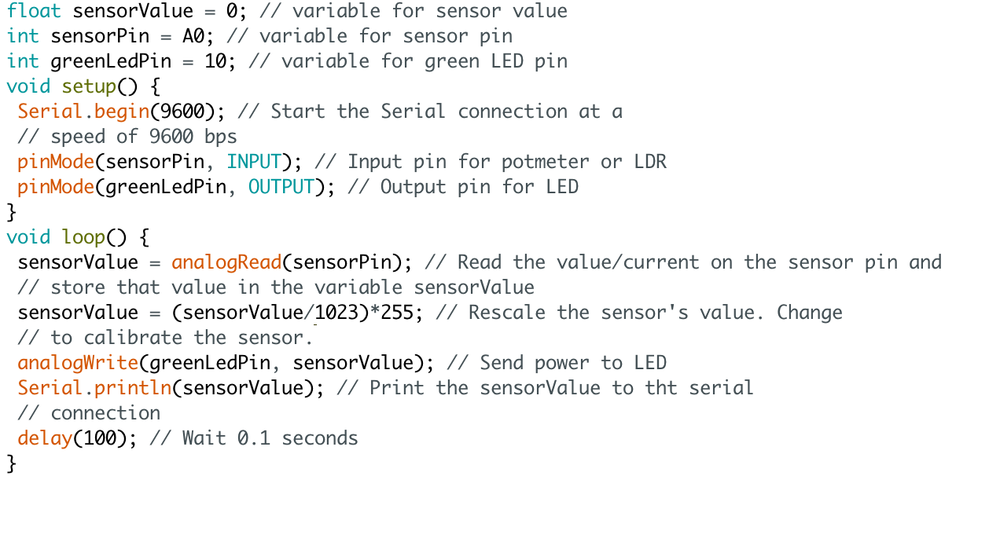

Exercise 13E
In this exercise, we needed to let the speaker make a sound when it went out of two values. Mine does not work. I do not know what I did wrong and asked a lot of people for help. My only thought is, that the speaker might be broken.

In the last workshop, we got to work with the Arduino kit we had purchased. It was divided into two workshops, this means more time with the Arduino kit. I really liked working with it, I think it is great that you can see what you build. Underneath, some exercises are shown. What is shown, are the codes, a video of the outcome and a small explanation of the exercise. Enjoy!
We are working with LEDs at this moment, and I had to write the code and set the Arduino that one LED would light up and be out twice as long as the other LED. I used a green and a yellow LED and we were given a diagram that helped us set up the code.
At this point it is not hard and if you follow the instructions you can carry out the assignments just fine. I did use the diagram with this, but when I saw it, it became very clear what to do.
After working with LEDs going on and off, we worked with them changing brightness. Underneath you can see how I worked out the code, so one LED gradually goes on and the other off.
What was difficult in this assignment, that you needed to know how to adress the brightness and it going down instead of up. Therefore, I asked some help and got a math problem I needed to solve and use in my code (255-brightness).
Here we worked with a potmeter, which could control the brightness of the LED, if you code it correctly. Here we went a step further and needed the potmeter to control the lights, but one would fade away as the other would light up.
The math problem from 4C came back in this exercise, but instead of using brightness, you needed to use the sensorValue. You also needed to use map(), which was important, because we worked with a potmeter. A potmeter has a maximum and minimum value of 0 and 1023, and those values are not the same for a LED. That is why you needed to map those values, that the potmeter uses the maximum values of the LED (0 and 255).
Next to the potmeter, we can also work with a LDR (Light Dependent Resistor) to make the LEDs turn on or off. That is what is shown below.
This assignment was not hard, the LDR just had to be placed correctly and the right resistors needed to be used.
Back to the potmeter, because the potmeter is used in this exercise. I used the potmeter to move a rectangle in Processing, which was linked to the Arduino. You can see that when you turn the wheel on the potmeter, the rectangle moves on the screen from one corner to another.
You already got the Processing code, so the only thing you had to change was the shape or direction of the shape that was already linked to the potmeter and Arduino.
An item you can also control light with, are buttons. Exercise 9 was about using the buttons to control the light and in exercise 9F, the lights needed to go on when one button was pressed. It needed to go out when both buttons or no button was pushed.
At first I did not succeed, it did not work, but with a little help and looking back on the previous exercises (9), I eventually came to the solution.
The arduino can also make a robot dance, and not any robot. A servo, this is a little engine that you can give legs and make the legs move. That is what I did in this exercise. I send a code to the servo, that made him move in a specific way, that kind of looks like dancing.
The code was not that hard, but it had to be a little dance, what made it harder. I could make the servo move, but that was just its feet going from one way to another. At the end, I made it do a little step between, some sort of pause.
To stay with the servo, there is a way you can control the engine with buttons. One button should move the servo clockwise and the other counter-clockwise.
I found this exercise more difficult and the ones I had already done and needed extra help with it.
Making music is also a possibility with the Arduino, when you build a circuit with a speaker and code the notes, your Arduino sings a song for you.
I worked on this exercise with a friend of mine, and we did the melody of ... and it was not really hard, because the code was given in the previous exercise (12A).
In this exercise, we needed to let the speaker make a sound when it went out of two values. Mine does not work. I do not know what I did wrong and asked a lot of people for help. My only thought is, that the speaker might be broken.